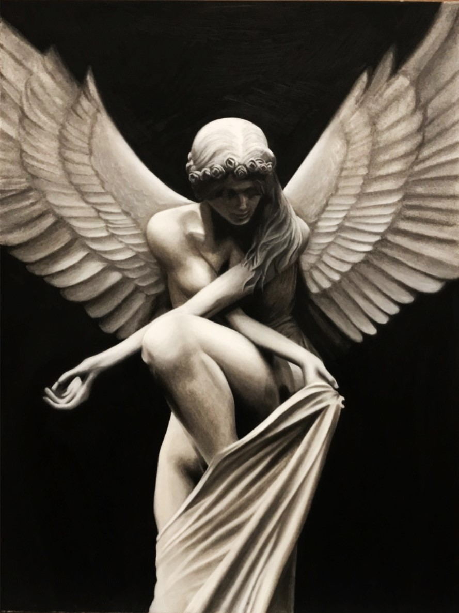

The Angel
- Medium
- charcoal
- Dimensions
- 19" x 25"
Inspired by The Angel, a sculpture by Benjamin Victor, this piece was one of my most challenging yet. The proportions were critical in such a large piece (19" x 25"). The cloth was the most fun part because I could play with different shades in simple lines like an experiment. I learned about how shadows behave under specific circumstances and identifying extreme values. I started to love working with charcoal because of how elegant the medium felt. It also eliminated the struggle of choosing the correct colors, allowing me to focus on only the values.
